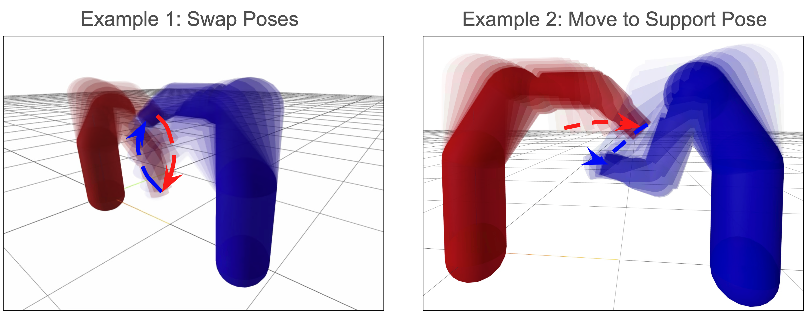

Megan Minju LeeHi! I'm a Master's student in Robotic Systems Development (MRSD) at Carnegie Mellon University, where I focus on the intersection of planning, control, and learning. My professional background includes a Software Engineering internship at Rivian and time as a Senior Software Test Engineer at Boston Dynamics, where I worked on scaling software stability and field deployments for the Stretch warehouse robot. Currently, I'm exploring how Reinforcement Learning and Vision-Language Models (VLAs) can push the boundaries of robot manipulation and navigation. Whether I am architecting bimanual systems for complex object manipulation or developing hierarchical models for long-horizon tasks, I love the challenge of bridging high-level perception with robust, low-level control. My goal is to build intelligent, scalable systems that allow robots to navigate and interact with the messiness of the real world. |

|
Projects

|
SCALE-Net: EEG-based BCIMegan Lee, Charlie [Lastname] In Preparation for ICML 2026 Developing a framework using CNNs and LSTMs to process spectral and temporal neural data. |
|  |
Nonlinear Trajectory Optimization for Multiple Robot ArmsCentralized multi-robot offline planner set up as a trajectory optimization problem. Given a set of kinematic collision-free paths for each robot, the controller tries to optimize a safe, smooth, and dynamically feasible local trajectory that can be directly executed on all robots online using DIRCOL and ALTRO. |
Nonlinear Trajectory Optimization for Multiple Robot ArmsCentralized multi-robot offline planner set up as a trajectory optimization problem. Given a set of kinematic collision-free paths for each robot, the controller tries to optimize a safe, smooth, and dynamically feasible local trajectory that can be directly executed on all robots online using DIRCOL and ALTRO. |
Nonlinear Trajectory Optimization for Multiple Robot ArmsCentralized multi-robot offline planner set up as a trajectory optimization problem. Given a set of kinematic collision-free paths for each robot, the controller tries to optimize a safe, smooth, and dynamically feasible local trajectory that can be directly executed on all robots online using DIRCOL and ALTRO. |
Nonlinear Trajectory Optimization for Multiple Robot ArmsCentralized multi-robot offline planner set up as a trajectory optimization problem. Given a set of kinematic collision-free paths for each robot, the controller tries to optimize a safe, smooth, and dynamically feasible local trajectory that can be directly executed on all robots online using DIRCOL and ALTRO. |